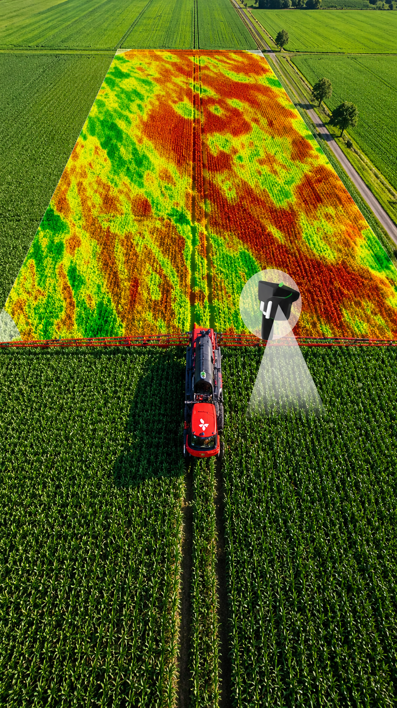
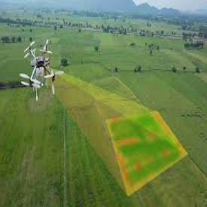
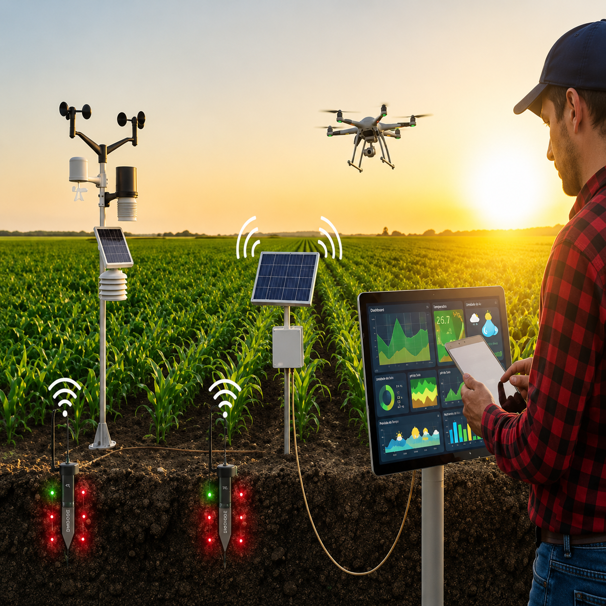
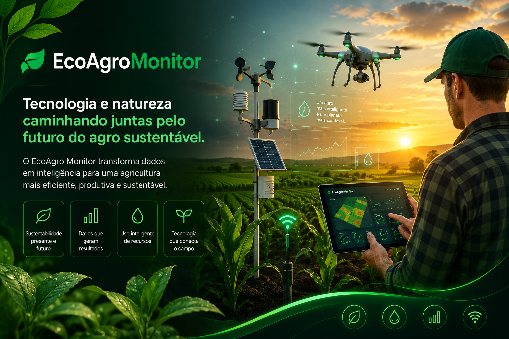

Monitor
Descubra o futuro do agronegócio sustentável com o EcoAgro Monitor. Explore práticas agrícolas responsáveis, dicas de cultivo sustentável e teste seus conhecimentos com nosso quiz interativo. Junte-se a nós nessa jornada verde!
Conheça algumas práticas agrícolas sustentáveis que estão transformando o setor e promovendo um futuro mais verde.

A agricultura de precisão possibilita um manejo mais eficiente das lavouras. A utilização de drones equipados com câmeras e sensores avançados permite um monitoramento detalhado das plantações, identificando pragas, falhas no cultivo e áreas que necessitam de correções. Na prática, a aplicação precisa de insumos reduz custos e melhora a sustentabilidade. No Mato Grosso, por exemplo, drones têm sido usados para pulverizar lavouras com maior precisão, otimizando a aplicação de defensivos e, consequentemente, reduzindo desperdícios. Confira mais detalhes no vídeo abaixo:
Fonte:Softdesign

O sensoriamento remoto, por meio de satélites, sensores terrestres e aeronaves, tem desempenhado um papel crucial na modernização da agricultura. Esse tipo de monitoramento fornece informações detalhadas sobre condições como umidade do solo, fertilidade e clima, permitindo ajustes em tempo real para otimizar a produção. A Embrapa, por exemplo, tem fornecido dados essenciais para o monitoramento de culturas como soja e cana-de-açúcar, permitindo uma gestão mais eficiente e sustentável. Essas informações possibilitam a detecção precoce de problemas, como déficit hídrico, pragas e doenças, permitindo ações rápidas e eficazes para aumentar a produtividade e reduzir perdas.
Fonte:Softdesign

A Internet das Coisas (IoT) está modernizando o Agronegócio, permitindo o monitoramento remoto de máquinas e sistemas agrícolas. Sensores conectados em tempo real medem variáveis como temperatura e umidade do solo, além de monitorar o desempenho de equipamentos.
No entanto, desafios como a conectividade rural limitada ainda representam um obstáculo significativo. Para superar isso, é necessário investir em redes móveis, satélites e soluções híbridas que ampliem o acesso à conectividade no campo. Atualmente, apenas 23,8% da área agrícola brasileira conta com cobertura 4G ou 5G, concentrada principalmente nas regiões Sul e Sudeste.
Fonte:Softdesign
divirta-se com nossos jogos educativos

O EcoAgro Monitor é um projeto inovador desenvolvido para promover a sustentabilidade no agronegócio. Nosso objetivo é fornecer informações, recursos e ferramentas para agricultores, estudantes e entusiastas do setor agrícola, incentivando práticas responsáveis e conscientes. Através de uma plataforma interativa, oferecemos conteúdos educativos, dicas de cultivo sustentável e um quiz para testar seus conhecimentos sobre o tema. Junte-se a nós nessa jornada rumo a um futuro mais verde e sustentável!